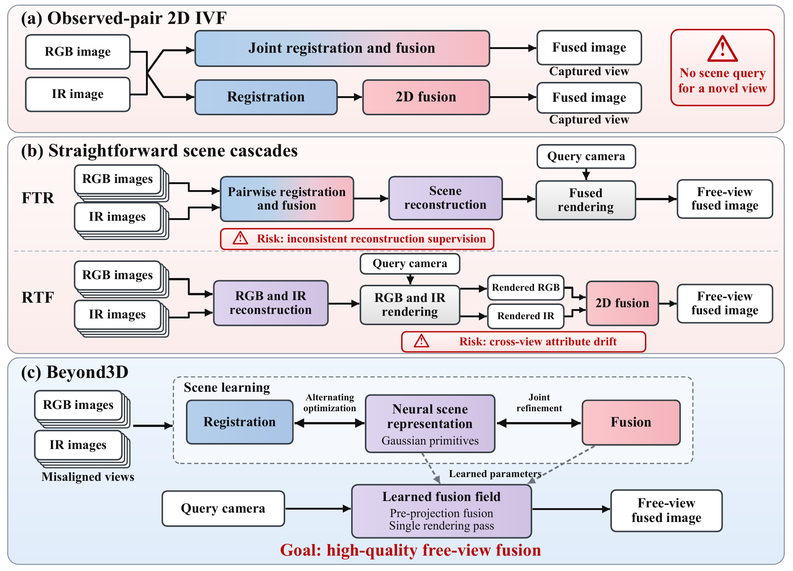
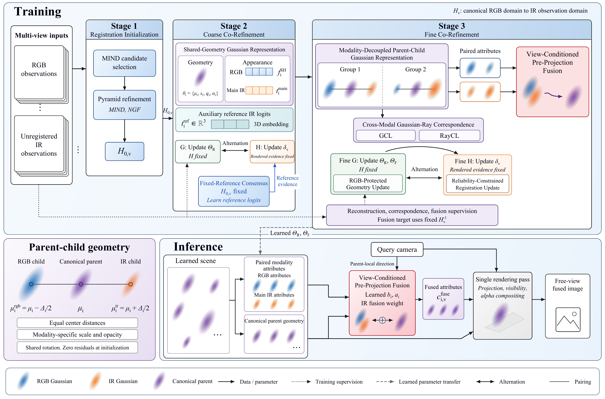
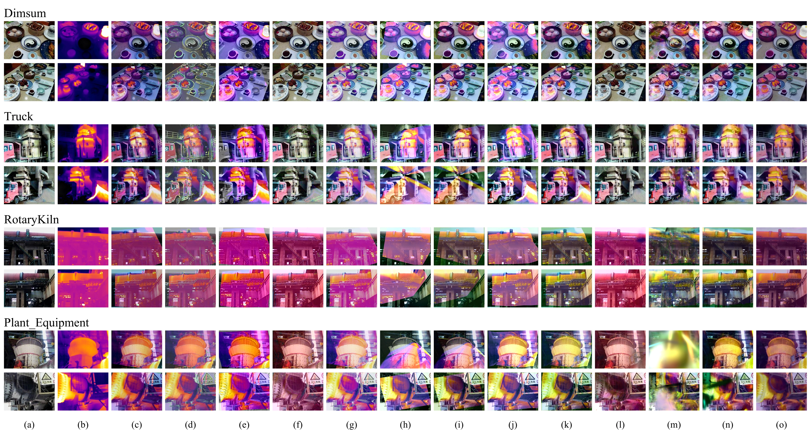

Infrared-visible fusion in 3D
From Pair to Scene:
Free-View Infrared-Visible Fusion
from Misaligned RGB-IR Observations
Beyond3D brings infrared-visible fusion into a scene representation. Explore fused views along novel camera trajectories, beyond the observed image pairs.
01 / Interactive exploration
Follow the trajectory.
See the fusion.
Move through the manuscript's novel trajectories. Drag the slider, select a query view, or press play to explore the rendered results.
This frame could not be loaded.
Drag to explore. Arrow keys step through views. Space plays or pauses.
Each position shows the nearest available rendered view. Images are not blended between frames.
02 / Inside the paper
From observations
to a fused scene.
The first three figures from our manuscript. Select a figure to inspect it at full resolution.

From pair to scene
From observed-pair fusion to camera-queryable scene fusion. Beyond3D couples registration and fusion through a Gaussian scene representation.

The Beyond3D framework
Beyond3D initializes per-view registration, jointly refines shared and modality-specific Gaussian representations, and fuses paired attributes before a single rendering pass.

Held-out view comparison
Fusion at held-out test views from four RGBT-Scenes scenes. Pairwise methods receive images at each query view; scene methods render learned representations. Results use pseudocolor infrared.
Continue exploring